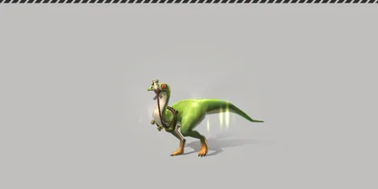
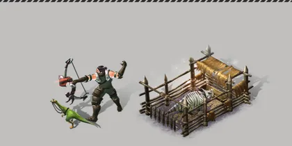

หน้าแรก › จับและเลี้ยงสัตว์
 สัตว์เลี้ยง ใช้ได้
สัตว์เลี้ยง ใช้ได้
เรียกสัตว์เลี้ยงออกมาช่วยสู้ ขี่ ขนของ ให้อาหาร ใช้สกิลติดตัว ผลิตนมในคอก คืนชีพ และดูแลไม่ให้แก่
บางหัวข้อในหน้านี้ยังไม่เสร็จ
สัตว์ที่ จับ และฝึกจนเชื่องแล้ว เมื่อสร้างสายใยจะกลายเป็นสัตว์เลี้ยงของเรา เรียกออกมาเดินตาม ขี่ ใช้กระเป๋าของมันขนของ ให้ช่วยสู้ด้วยสกิลติดตัว หรือใส่คอกให้ผลิตนม/ฝึกเพิ่มเลเวล

ทำอะไรได้บ้าง ใช้ได้
- เรียกออกมา / เก็บกลับ — ออกมาได้ทีละตัว · สัตว์ที่อยู่ในคอก ปล่อยร่อนเร่ หรือหมดแรงอยู่ เรียกไม่ได้
- ขี่ — เฉพาะชนิดที่ขี่ได้ (ความเร็วตามชนิด เช่นแรปเตอร์ 700 · แมมมอธ 160)
- กระเป๋าสัตว์ — ช่องตามชนิด เช่นแรปเตอร์ 10 · เซเบอร์ทูธ 30 · แองคิโลซอรัส 150 · ไทรเซราทอปส์ 240 · แมมมอธ 300 · แบรคิโอซอรัส 500
- ให้อาหาร เพิ่มพลัง · ตั้งชื่อ (1–16 ตัวอักษร) · ปล่อยเป็นอิสระ (สัตว์หายถาวร · ของในกระเป๋าสัตว์คืนเข้ากระเป๋าเรา)
- ร่อนเร่ — ปล่อยให้เดินเล่นบนเกาะเทมได้สูงสุด 5 ตัว (ไม่แก่ ผลิต/ฝึกไม่ได้ · ของในกระเป๋าสัตว์หาย)
- สุ่มอันดับใหม่ (ชนิดที่มีหลายอันดับ) — เห็นอันดับที่สุ่มได้ก่อน แล้วเลือกรับหรือคงอันดับเดิม
จำนวนสัตว์ในสังกัด ใช้ได้
| สกิล | สัตว์ในสังกัดสูงสุด |
|---|---|
| ไม่มี | 8 |
| คุมสัตว์ I / II / III / IV | 10 / 12 / 14 / 16 |
- หน้าสัตว์เลี้ยงและแถบด้านบนแสดง «จำนวน / สูงสุด»
- นับ: ตัวที่เรียกออกมา ตัวที่เก็บไว้ ตัวที่อยู่ในคอก · ไม่นับ: ตัวที่ปล่อยร่อนเร่บนเกาะเทม และสายบังเหียนที่ยังไม่ได้สร้างสายใย
- ครบแล้ว จับสัตว์ป่า · สร้างสายใย · เอาตัวที่ร่อนเร่ออกมา ไม่ได้ — ขึ้นข้อความแจ้ง เครื่องมือไม่สึก สายบังเหียนยังอยู่ · ปล่อยร่อนเร่หรือปล่อยเป็นอิสระสักตัวก่อน
- สลับตัวต่อตัว (ปล่อยร่อนเร่ 1 ตัว เอาออกมา 1 ตัว) ทำได้เสมอแม้เต็ม
- ใครมีสัตว์เกินเพดานอยู่แล้ว ไม่มีตัวไหนหาย — แค่รับเพิ่มไม่ได้จนกว่าจะเหลือต่ำกว่าเพดาน
- ปุ่มเอาสัตว์ออกจากการร่อนเร่ในหน้าสัตว์เลี้ยงใช้ได้แล้ว
พลังและการให้อาหาร ใช้ได้
พลัง ของสัตว์เลี้ยง (เต็ม 300 ทุกชนิด) ลดลงเฉพาะตอนเรียกออกมา และใช้ทั้งตอนสู้ ใช้สกิล และผลิตของ
| ชนิด | พลังลดต่อวินาที | จากเต็มจนหมด |
|---|---|---|
| แรปเตอร์ · ไดร์วูล์ฟ · โอวิแรปเตอร์ · ออร์นิโทไมมัส ฯลฯ (18 ชนิด) | 0.05 | ~100 นาที |
| ชนิดอื่น (83 ชนิด) | 0.09 | ~55 นาที |
| อาหาร | พลังที่ได้ |
|---|---|
| ใบไม้ · ปลาซิว | 40 |
| เนื้อ | 50 |
| อาหารสัตว์ที่มีคุณค่าทางโภชนาการ | 500 |
| อาหารสัตว์ที่มีคุณค่าทางโภชนาการสูง | 700 |
| อาหารเพิ่มพลังอนันต์ | พลังไม่ลดชั่วคราว |
- ให้ได้เฉพาะของที่เป็นอาหารสัตว์ (เมนูให้อาหารแสดงเอง) · พลังเต็มแล้วให้อาหารธรรมดาไม่ได้
- สกิลโจมตีและยั่วยุต้องมีพลังอย่างน้อย ครึ่งหนึ่งของเต็ม (150)
เลือด หมดแรง และคืนชีพ ใช้ได้
- สัตว์เลี้ยงเลือดตามชนิดและเลเวล · ฟื้นเลือดเอง 0.3% ต่อวินาที
- โดนสัตว์ป่าตีจนเลือดหมด = หมดแรงล้มลง กลับเข้ารายการเอง และเรียกออกมาไม่ได้จนกว่าจะคืนชีพ
- คืนชีพ จากหน้าสัตว์เลี้ยง → เลือดเต็ม พลังอย่างน้อยครึ่งหนึ่ง
อายุและความแก่ ใช้ได้
- สัตว์เลี้ยงอยู่ได้ 30 วัน นับจากสร้างสายใย แล้วจะขึ้นว่า «เก่า» — สถิติลดเหลือครึ่ง (เลือด การฟื้นเลือด โจมตี ป้องกัน ความเร็ว กระเป๋า พลังสูงสุด ความแม่น ฯลฯ)
- ปล่อยร่อนเร่บนเกาะเทม = นาฬิกาอายุหยุดเดิน
- ยาชะลออายุสัตว์ (15/30/45/60 วัน) เพิ่มเวลาชีวิตคืน แต่ไม่เกินอายุขัยเต็ม
สกิลติดตัว ใช้ได้
สัตว์เลี้ยงแต่ละตัวมีสกิลติดตัว 1 สกิล (มีทั้งหมด 37 สกิล) · สุ่มครั้งแรกฟรี · สุ่มใหม่ต้องใช้ตั๋ว · ความแรงตามอันดับของสกิล (D–S)
| แบบ | ตัวอย่าง | ผล |
|---|---|---|
| โจมตี | กัด · พุ่งเข้าใส่ · เตะกลับหลัง · สงครามเคมี | สัตว์เลี้ยงตีเป้าที่เราสู้อยู่ (ห่างไม่เกิน 6 ไทล์) แรง ×2 ของพลังโจมตีสัตว์ |
| ยั่วยุ | ยั่วยุ | สัตว์ป่าในระยะ 8 ไทล์หันไปไล่สัตว์เลี้ยงแทนเรา |
| บัฟ | แยกเขี้ยว · วิ่งอย่างอิสระ · หลังที่แข็งแรง · ตัวช่วยการรักษา · ม้าล่อบรรทุกสัมภาระ | เพิ่มสถิติของสัตว์เลี้ยงหรือเราชั่วคราว |
- ใช้สกิลได้เมื่อสัตว์ถูกเรียกออกมา · ใช้แต่ละครั้งเสีย พลัง 20 · คูลดาวน์ตามสกิล (เช่น กัด 15 วินาที · ยั่วยุ 33 วินาที · หลังที่แข็งแรง 300 วินาที)
ผลิตนมและฝึกในคอก ใช้ได้

ใส่สัตว์เลี้ยงในคอกสัตว์ (คอกสัตว์ชั่วคราว · คอกขนาดเล็ก · คอกขนาดกลาง) → เลือกสัตว์ → ผลิต หรือ ฝึก → รอครบเวลาแล้วกดรับ ได้ของเข้ากระเป๋าและ EXP ของสัตว์
| ผลิต | เวลา | ใช้พลัง | EXP สัตว์ | ปลดที่เลเวลสัตว์ |
|---|---|---|---|---|
| ผลิตเลเวล 1 | 1 ชม. | 150 | 40 | 1 |
| ผลิตเลเวล 2 | 2 ชม. | 170 | 110 | 10 |
| ผลิตเลเวล 3 | 4 ชม. | 190 | 290 | 20 |
| ผลิตเลเวล 4 | 8 ชม. | 270 | 1,100 | 30 |
| ผลิตเลเวล 5 | 10 ชม. | 460 | 3,900 | 40 |
| ผลิตเลเวล 6 | 12 ชม. | 590 | 15,000 | 50 |
- นมมาจากการผลิตของสัตว์เลี้ยงลูกด้วยนม เช่น ฟีนาโคดัส มาครัวเชเนีย เมกะโลซีรอสเพศเมีย ไดร์วูล์ฟ สคังโคดัส: แต่ละรอบได้ นม หรือ มูลสัตว์ อย่างละ 50%
- เมกะโลซีรอสเพศผู้ได้มูลสัตว์อย่างเดียว · บัมเบิลบีฟีนาโคดัสได้น้ำผึ้ง 50% / นม 30% / มูลสัตว์ 20%
- จำนวนต่อรอบ = (2 + เลเวลสัตว์ ÷ 10) × ตัวคูณของเลเวลการผลิต (1 · 5/3 · 7/3 · 10/3 · 14/3 · 6) ปัดลง — สัตว์ Lv1 ผลิตเลเวล 1 ได้ 2 ชิ้น
- มีโอกาส 9–17% ได้ของแถม (เหรียญ · หนอน · เมล็ดข้าวโพด) · เลเวลของ = เลเวลสัตว์
- ฝึกเลเวล 1 ใช้ 1 ชม. พลัง 150 ได้ EXP สัตว์ 100 (ไม่มีของ)
- ผลิตเลเวล 5–6 ใช้พลังเกิน 300 ต้องเพิ่มพลังสูงสุดของสัตว์ก่อน
เลือกเกาะเทม ใช้ได้
ตอนไปเกาะเทมครั้งแรกเลือกแผนที่ได้ 5 แบบ (เลือกแล้วเปลี่ยนไม่ได้) · ทุกแบบมีสัตว์ป่าให้จับ ไม่มีบอส — ดู เลือกแบบเกาะเทม
ยังไม่เสร็จ ยังไม่เสร็จ
ใช้ยาสำหรับสัตว์ตอนคืนชีพ ยังไม่เสร็จ
ตอนนี้คืนชีพสัตว์เลี้ยงฟรีจากหน้าสัตว์เลี้ยง ยังไม่ต้องใช้ยาสำหรับสัตว์